I believe you should demand better design in your products. Every day we interact with products that are the results of misplaced compromise, of decision by committee, and a lack of understanding of the end user of a product. And even more-so, design has become a necessity to drive growth in your business.
I understand these needs, and I know how to get you the results you want.
I understand these needs, and I know how to get you the results you want.
I believe you should demand better design in your products. Every day we interact with products that are the results of misplaced compromise, of decision by committee, and a lack of understanding of the end user of a product. And even more-so, design has become a necessity to drive growth in your business.
I understand these needs, and I know how to get you the results you want.
I understand these needs, and I know how to get you the results you want.
- Autodesk 2019 - present
- Human Interest 2017 - 2019
- Common Cents Lab 2016 - 2017
- Maisha Meds 2014 - 2016
- Lyra Health 2015 - 2015
End-to-end design.
Your projects deserve a design that has been considered from "go".If we're being honest, Mac apps are a bit of a lost art. There are great reasons to make cross-platform apps — to start, they're cross-platform — but it's just not who we are. Founded as a Mac software company in 1997, our joy at Panic comes from building things that feel truly, well, Mac-like.
Long ago, we created Coda, an all-in-one Mac web editor that broke new ground. But when we started work on Nova, we looked at where the web was today, and where we needed to be. It was time for a fresh start.